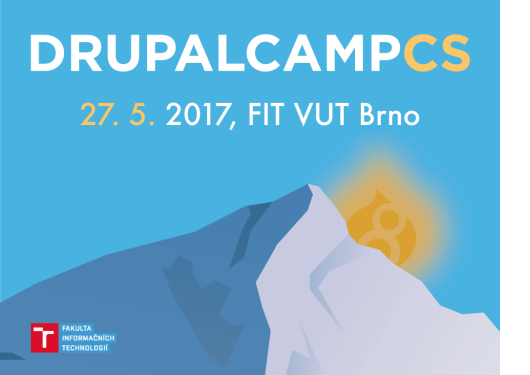

Drupal je populární systém pro správu obsahu (Content Management System - CMS).
Snadná rozšiřitelnost pomocí modulů a mnoho možností, které poskytuje, z Drupalu dělá jeden z nejlepších redakčních systémů. Navíc je zdarma i se zdrojovými kódy.
Toto jsou české Drupal stránky. Jsou určeny k podpoře uživatelů a diskusi o jeho používání.
Drupal Global Sprint Weekend 1/2018 v Bratislave
Vložil/a mirom, 8 Leden, 2018 - 13:39Pozývame všetkých z Drupal komunity, kto sa chce zúčastniť na Drupal Global Sprint-e.
V rámci Drupal Global Sprint vás radi uvítame na komunitnom víkendovom stretnutí ohľadom issues k Drupal 8 core a contrib moduloch a témach.
Máme pripravených ohľadom sprintu prácu na webovej prezentácii Drupal Slovakia (prezentačná časť drupal.sk), môžete nám tiež pomôcť s contrib modulmi pre Drupal Commer
SnackHost - hosting vyladěný pro Drupal projekty
Vložil/a martin_klima, 18 Prosinec, 2017 - 22:29Vývojáři potřebují k práci stále více technologií a s nimi stoupají i nároky na hosting. Najít profesionální hosting za příznivou cenu ale není snadné. Naštěstí si mezery na českém trhu všimli i poskytovatelé služeb, takže pro vás máme dobrou zprávu: hledali jsme, testovali, vyjednávali a nakonec našli řešení, které je pro Drupal přímo vyladěné.
Setkání a sprint 6.12.2017 v Praze
Vložil/a radimklaska, 28 Listopad, 2017 - 03:03- Setkání: 6.12.2017 od 18:00 (otevřeno od 17:30)
- Místo: Český rozhlas, Vinohradská 1409/12,120
00 Praha – [mapa, web rozhlas.cz]
- Hashtag: #drupalcz
- Pochlubte se účastí na Facebooku / Meetup.com / groups.drupal.org
- Vstup: zdarma, REGISTRACE ZDE: https://goo.gl/…diVXOpsF3e43
Po prázdninové pauze pokračujeme dalším setkáním a sprintem 22.9.2017 v Praze
Vložil/a radimklaska, 12 Září, 2017 - 13:24Prázdniny skončily a je třeba se připravit na Drupalcon ve Vídni https://events.drupal.org/vienna2017 :)
- Dopolední sprint: 22.9.2017 od 09:30 (CN Group,
Krakovská 583/9, 110 00 Praha 1)
- Odpolední sprint: 22.9.2017 od 14:00 (Český rozhlas,
Vinohradská 1409/12,120 00 Praha)
- Setkání: 22.9.2017 od 18:00 (otevřeno od 17:30, Český
rozhlas, Vinohradská 1409/12,120 00 Praha)
- Pochlubte se účastí na Facebooku / Meetup.com / groups.drupal.org
Staň se junior vývojářem v Drupalu
Vložil/a karlos, 8 Červen, 2017 - 10:02Ahoj, zajímá Tě oblast IT a chceš se naučit programovat? Sníš o tom, že se staneš Drupal vývojářem? Právě pro Tebe máme skvělou a jediněčnou příležitost si to zkusit a začít svojí kariéru v IT – jmenuje se CN University.
CN University je tzv. On-the-job trainee program, který je koncipován formou brigády a spolupráce na DPČ (pokud můžeš pracovat na full time, tak samozřejmě klasickou pracovní smlouvou). Během přibližně 6 měsíců projdeš 3 fázemi, na konci kterých dostaneš pracovní nabídku na spolupráci se společností CN group s.r.o. jako Junior Developer.
Československý DrupalCamp 2017
Vložil/a radimklaska, 2 Květen, 2017 - 02:05 Československý
DrupalCamp 2017 se po roce (skoro na den přesně) vrací do Brna!
Camp: 27. 5. 2017 (warm-up party: 26. 5. 2017 večer)
Místo: VUT FIT, Brno – http://drupalcs.camp/venue/ / https://goo.gl/…/77Y4vwNWLft
Program: http://drupalcs.camp/program/
Hashtag: #drupalcampcs na Instagramu a Twitteru
Vstupenky: http://drupalcs.camp/listky/
Prosím neváhejte s koupí lístku – velice nám to pomůže
s plánováním stejně jako vaše přihlášení na sociálních sítích: Facebooku / Srazy.info / Meetup.com / groups.drupal.org –
Díky!
Drupal setkání Brno
Vložil/a milos.kroulik, 13 Březen, 2017 - 22:21Drupal v Brně žije!
- Setkání: 24.4. 2017 od 18:00
- Místo: Proof & Reason, Cihlářská 643/19, 602
00 Brno-střed, mapa: https://goo.gl/…/fhzeGWzXmHp
- Hashtag: #drupalcz
- Vstup: ZDARMA, REGISTRACE ZDE: https://goo.gl/…GFq8vFV5NBx1
Drupal setkání s podporou Českého rozhlasu 14.3.2017 + Přispěvatelské odpoledne
Vložil/a radimklaska, 6 Březen, 2017 - 13:06- Sprint: 14.3.2017 od 14:30
- Setkání: 14.3.2017 od 17:30
- Místo: Český rozhlas, Vinohradská 1409/12,120
00 Praha – [mapa, web rozhlas.cz]
- Hashtag: #drupalcz
WordPress WordCamp Praha 2017
Vložil/a radimklaska, 9 Únor, 2017 - 14:51Naši kolegové z WordPress komunity pořádají tento týden WordCamp v Praze.
V sobotu 18. února 2017 se uskuteční konference WordCamp Praha 2017, která se bude věnovat redakčnímu systému WordPress z pohledu uživatelů i vývojářů a tématům týkajícím se tvorby a provozu internetových stránek na této celosvětově nejrozšířenější publikační platformě. Ve světě již proběhlo celkem 540 WordCampů, ve 203 městech, 48 zemích a na 6 kontinentech, v České republice se bude konat po čtvrté. Celá akce bude probíhat v prostorách VŠE v Praze a nabídne návštěvníkům celkem 14 přednášek. – https://2017.prague.wordcamp.org/
Konference Drupal IronCamp 2016 v Praze
Vložil/a radimklaska, 15 Září, 2016 - 15:15V listopadu se bude v Praze konat první ročník konference Drupal IronCamp. Zde je malá ochutnávka toho, co můžete očekávat.
Čtěte ale rychle. Early bird vstupenky za sníženou cenu jsou dostupné pouze do páteční půlnoci 16.9. 23:59! Zakoupíte je na webu: http://www.drupalironcamp.com/buy-a-ticket ;-)
Drupal setkání s podporou Českého rozhlasu 14.9.2016 + Překladatelský sprint
Vložil/a radimklaska, 23 Červen, 2016 - 18:02- Sprint: 14.9.2016 od 14:30
- Setkání: 14.9.2016 od 17:30
- Místo: Český rozhlas, Vinohradská 1409/12,120
00 Praha – [mapa, web rozhlas.cz]
- Hashtag: #drupalcz
- Vstup: ZDARMA, REGISTRACE ZDE: https://goo.gl/…03fEeefd8nw2
Drupal setkání s podporou Českého rozhlasu 22.6.2016 + Překladatelský sprint
Vložil/a radimklaska, 13 Červen, 2016 - 12:27- Sprint: 22.6.2016 od 14:30
- Setkání: 22.6.2016 od 17:30
- Místo: Český rozhlas, Vinohradská 1409/12,120
00 Praha – [mapa, web rozhlas.cz]
- Hashtag: #drupalcz
- Vstup: ZDARMA, REGISTRACE ZDE: http://goo.gl/…mfdBC6y6hmx1
DrupalCampCS 28.-29.5.2016, Bratislava - Darujeme 2 vstupenky!
Vložil/a radimklaska, 10 Květen, 2016 - 00:25Zbývá posledních pár dní do československého drupalcampu: http://www.drupalcs.camp/ Program je nabitý a my máme dvě volné vstupenky pro poslední nerozhodnuté! Pro jejich získání je třeba toto:
- Napsat do komentáře pod tento článek, že máte zájem. (přihlašte se, ať není komentář anonymní)
- V komentáři musí být odkaz na váš obsah (například na drupal.cz fórum) ve kterém jste někomu zodpověděli drupal dotaz. :-) Počítají se také příspěvky v blogu s návody atp.
- První dva komentáře získají lístek zdarma (1 komentář = 1 lístek). :-)
Za lístky děkujeme Vláďovi a Zuzce Kosejkovým!
Drupal setkání s podporou Českého rozhlasu - Praha 26.4.2016 + Sprint
Vložil/a radimklaska, 1 Duben, 2016 - 02:12- Sprint: 26.4.2016 od 14:30
- Setkání: 26.4.2016 od 17:30
- Místo: Český rozhlas, Vinohradská 1409/12,120
00 Praha – [mapa, web rozhlas.cz]
- Hashtag: #drupalcz
- Vstup: ZDARMA, REGISTRACE POD ČLÁNKEM
ZRUŠENO: Drupal setkání s podporou Českého rozhlasu - Praha 29.3.2016
Vložil/a radimklaska, 21 Březen, 2016 - 21:43Buhužel musíme tento termín zrušit a přesunout na pozdější
datum – bude oznámeno co nejdříve.
- Kdy: 29.3.2016 od 17:30
- Místo: Český rozhlas, Vinohradská 1409/12,120
00 Praha – [mapa, web rozhlas.cz]
- Hashtag: #drupalcz
- Vstup: ZDARMA, REGISTRACE POD ČLÁNKEM
- 1
- 2
- 3
- 4
- 5
- 6
- 7
- 8
- 9
- …
- následující ›
- poslední »
Nejnovější příspěvky blogu
- DrupalCampCS už budúci víkend 28-29.05 2016
- Podpořte projekt který máte rádi
- Drupal 8 šablony
- Jak poslat email autorovi nodu po odeslání formuláře (Webform)
- Je to dělané v Drupalu?
- Tutoriály k Drupalu 7 ke stažení
- Česká televize hledá PROGRAMÁTORA
- Chcete pomoci s upgrade Drupal.cz na D7 (nebo třeba i na D8)?
- Přihlášení uživatele
- Drupal Kosice Meetup 2014-07-02 17:00